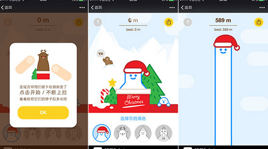
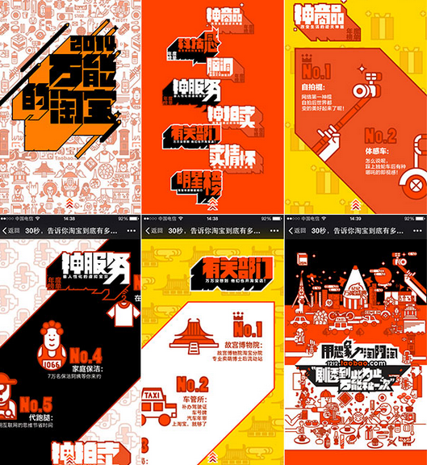
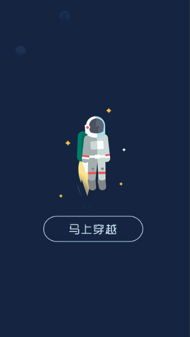

简单的说你的浏览器看不了 洗洗睡！或者你安装个 chrome or firefox or safari
HTML5究竟是什么?
HTML5
HTML5新的标签 + CSS3 + 新的JS API
这些内容能分有什么
?
HTML5 新标签
语义化
新元素
新属性
新事件
CSS3
高级选择器
新的效果属性
响应式布局
动画
JS API
图形绘制(2d canvas)
WebSocket/Server-send
离线缓存
设备访问
多媒体操控
那学习了上面的内容我们能做出什么东西了?
应用
应用
游戏
游戏

互动营销
互动营销

看个
直观
点的吧 
谢谢